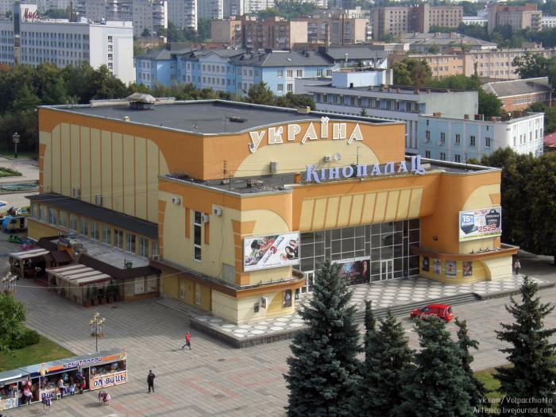

Рівненський академічний український музично-драматичний театр Рівненський обласний український музично-драматичний театр заснований у 1939 році. Початок творчого життя театру ознаменувала вистава «Любов Ярова» К.Треньова. Згодом колектив здійснює постановки вистав «Гроза» О.Островського, «На Вкраїні милій» І.Чабаненка та інші. З початком війни у червні 1941 року театр припинив свою роботу. Остання вистава воєнних років, «Назар Стодоля» Т.Шевченка, відбулася 31 січня 1944 року. У червні 1944 року театр відновлює свою роботу. Для творчого посилення трупи залучають акторів Мелітопольського драматичного театру, евакуйованого з міста Уфи. Новий театральний сезон відкрився 1 травня 1945 року. У Рівному вперше на українській сцені ожили безсмертні образи великої шекспірівської трагедії «Король Лір». У 1983 році з нагоди 700-річчя Рівного театр повертається у відбудоване приміщення. У 1997 році колектив очолює Володимир Петрів. У цей час формується новий репертуар, театр запрошує для постановки провідних майстрів сцени, режисерів, сценографів. Цікавий творчим експериментом стала у 2003 році постановка вистави «Літо в Ноані» Я. Івашкевича (історія кохання Жорж Санд та Фридеріка Шопена) польського режисера театру та кіно Богдана Поремби та сценографа Єжи Скжепінського з Варшави. У цьому ж році театр поставив історичну драму О.Огоновського «Гальшка Острозька» (режисер Мирослав Гринишин, м.Київ). У цей Рівному діє театр просто неба. Для його створення використовується внутрішній дворик театру, де побудована переносна сцена, зала на 256 місць, звукова та освітлювальна апаратура. Для постановки обрали музичну комедію «Рогоносець за п’єсою В.Шекспіра «Віндзорські жартівниці». Сьогодні театр активно розвивається. Репертуар збагачується новими цікавими виставами, а колектив - талановитою молоддю. Окрім великої на 600 місць працює мала сцена, розрахована на 100 глядачів. |
Рівненський академічний обласний театр ляльок
|
Рівненський міський будинок культури
|
|  | Кінопалац "Україна"
|
Multiplex Ера
|